Minh Nguyen, Georgy Gimel’farb, and Patrice Delmas
Dept. of Computer Science, The University of Auckland, Auckland 1142, New Zealand mngu012@aucklanduni.ac.nz
We introduce an online fast simulation of 3D scene view navigation reconstructed from a pair of stereo im- ages, which is able to be displayed on traditional web- browser environment. Users directly or indirectly up- load stereo images and retrieve a dynamic 3D scene using HTML5 canvas. User’s mouse-based interfaces can control orbit, move, and zoom operations to move around the scene as if “walking” through it. If Fly- ing Mode is selected, users can navigate the scene by flying or orbiting around following some pre-defined paths. Rather than other 3D visualisation environments such as OpenGL, using a scenario to simulate a 3D scene on a 2D canvas requires less memory, it is also faster and easier to implement and run on web and mo- biles. The application is publicly demonstrated online at www.ivs.auckland.ac.nz/3dnav.
Open GL View |
Our View |
| 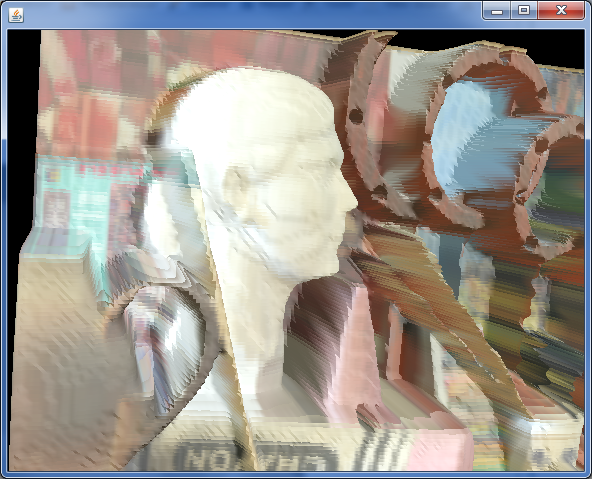 | 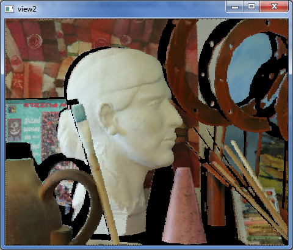 |
A related Iphone application is currently under development and expected to be released to AppStore shortly, below are some sample screenshot of it:
| 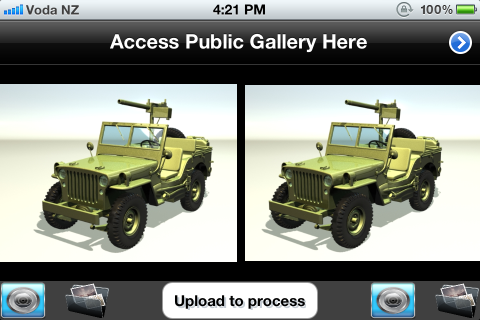 | 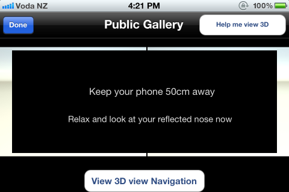 | 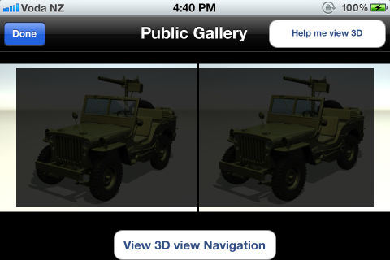 |
| 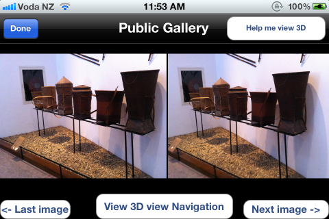 | 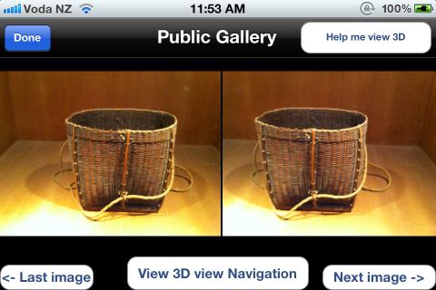 | 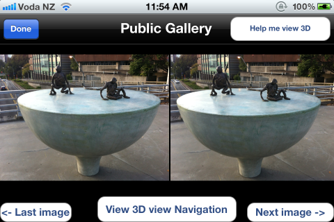 |
| 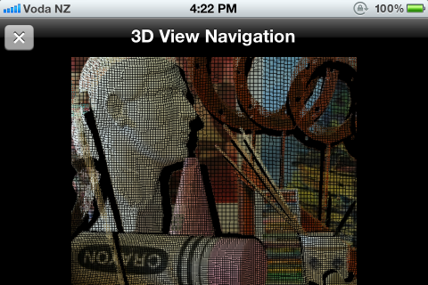 | 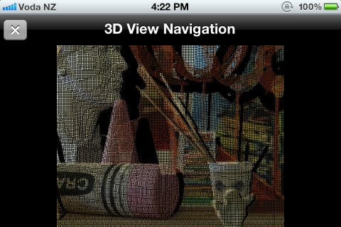 | 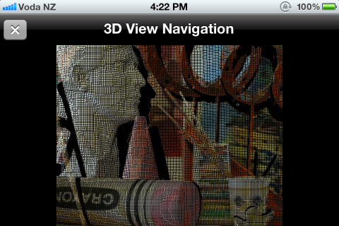 |
Click here to download this App and install it on your Iphone4/4S